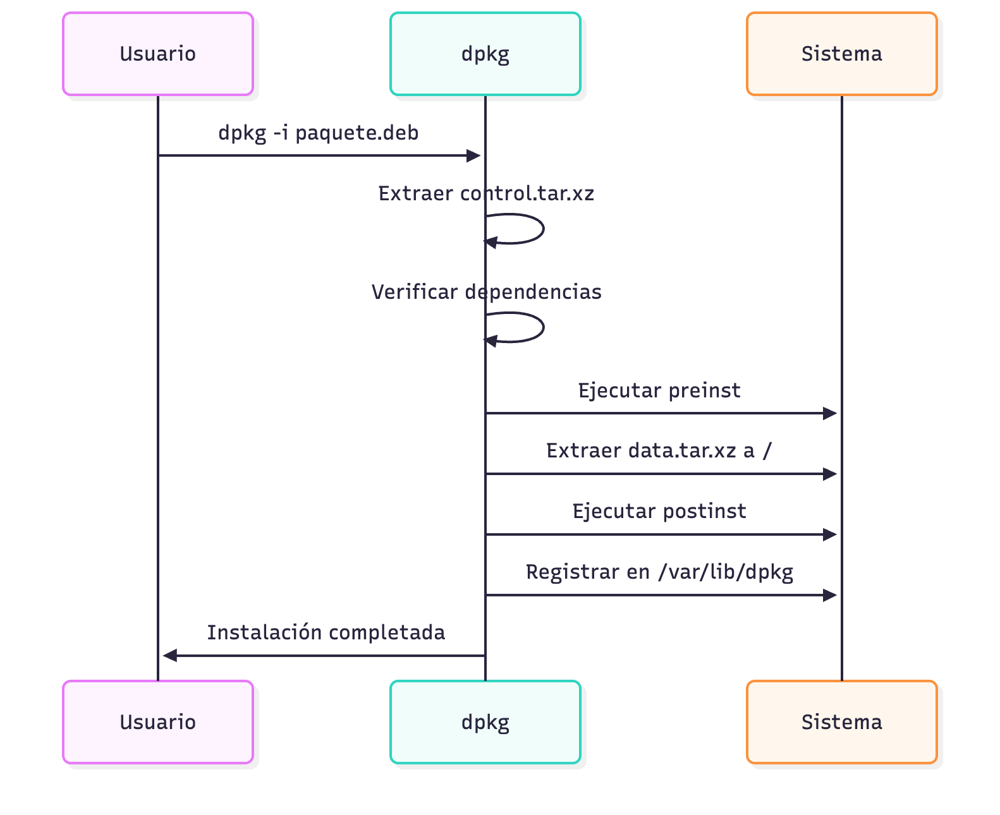
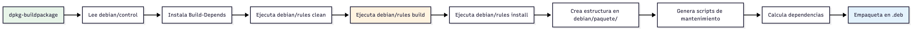

Como desarrolladores de software, tenemos un objetivo claro:
Como desarrolladores de software, tenemos un objetivo claro:
Nuestros programas los utilizan usuarios. Sin embargo…
Como desarrolladores de software, tenemos un objetivo claro:
Nuestros programas los utilizan usuarios. Sin embargo…
¿cómo lo distribuimos?
Un aspecto clave para el éxito es que nuestros programas sean fáciles de instalar.
pero no todo vale
Debemos tratar de evitar instalaciones como en Windows:
Debemos distribuir nuestro software a través de paquetes.
Un paquete es un archivo que contiene:
Advertencia
Un paquete no es solo un archivo comprimido, es un archivo comprimido + scripts de automatización
.tarImportante
TAR solo empaqueta, no comprime
archivo1.txt (100 KB)
archivo2.txt (200 KB)
archivo3.txt (150 KB)
↓
archivo.tar (450 KB)El tamaño total es la suma de tamaños
| Opción | Función |
|---|---|
-c |
Crear archivo |
-x |
Extraer archivo |
-t |
Listar contenido |
-v |
Verbose (mostrar progreso) |
-f |
File (especificar archivo) |
# Crear un archivo tar
tar -cvf proyecto.tar proyecto/
# Listar contenido sin extraer
tar -tvf proyecto.tar
# Extraer archivo
tar -xvf proyecto.tar
# Extraer en directorio específico
tar -xvf proyecto.tar -C /tmp/Tip
-cvf es el combo más común: Create + Verbose + File
TAR preserva información importante:
$ tar -tvf archivo.tar
drwxr-xr-x usuario/grupo 0 2025-10-27 10:00 proyecto/
-rw-r--r-- usuario/grupo 1234 2025-10-27 09:30 proyecto/README.md
-rwxr-xr-x usuario/grupo 5678 2025-10-27 09:45 proyecto/script.sh
lrwxrwxrwx usuario/grupo 12 2025-10-27 09:50 proyecto/link -> archivo.txt-rw-r--r--, drwxr-xr-xusuario/grupolink -> archivo.txtProblema: TAR no comprime
proyecto/ (100 archivos, 50 MB)
↓
proyecto.tar (50 MB) ← Mismo tamaño!Solución: Combinar el comando tar con distintos compresores.
TAR puede enlazar automáticamente con compresores:
| Compresor | Opción TAR | Extensiones |
|---|---|---|
| gzip | -z |
.tar.gz, .tgz |
| bzip2 | -j |
.tar.bz2, .tbz |
| xz | -J |
.tar.xz, .txz |
.tgz).tbz).txz)Tip
Si queremos escoger un compresor, normalmente xz da mejores resultados. Sin embargo, actualmente gzip es el estándar de facto y es compatible con la gran mayoría de sistemas de paquetes.
TAR es un excelente archivador, pero está muy limitado como instalador
# Descargar
wget https://ejemplo.com/miapp-1.0.tar.gz
# Extraer
tar -xzf miapp-1.0.tar.gz
cd miapp-1.0
# ¿Y ahora qué?
# ¿Dónde lo instalo?
# ¿Qué dependencias necesito?
# ¿Cómo lo desinstalo después?
# ¿Cómo actualizo?Si instalas con TAR, debes averiguar muchas cuestiones manualmente.
Un gestor de paquetes es un sistema que:
| Sistema | Formato | Distribuciones |
|---|---|---|
| APT/dpkg | .deb |
Debian, Ubuntu, Mint |
| RPM/DNF | .rpm |
Red Hat, Fedora, openSUSE |
| Pacman | .pkg.tar.zst |
Arch Linux |
| Portage | Source-based | Gentoo |
Nota
En este tema, nos centramos en el sistema .deb, el formato más popular históricamente. En prácticas también veremos cómo hacerlo con flatpak.
.debDebian.Un archivo .deb es un archivo AR que contiene:
mi-paquete.deb
├── debian-binary # Versión del formato (2.0)
├── control.tar.xz # Metadatos del paquete
│ ├── control # Información principal
│ ├── md5sums # Checksums de archivos
│ ├── postinst # Script post-instalación
│ ├── preinst # Script pre-instalación
│ ├── prerm # Script pre-desinstalación
│ └── postrm # Script post-desinstalación
└── data.tar.xz # Archivos a instalar
└── usr/
├── bin/
├── lib/
└── share/Todo paquete instalado se registra en:
/var/lib/dpkg/
├── info/
│ ├── flappybirddca.list # Lista de archivos
│ ├── flappybirddca.md5sums # Checksums
│ └── flappybirddca.postinst # Scripts
├── status # Estado de paquetes
└── available # Paquetes disponiblesNota
Gracias a esta lista, dpkg sabe qué desinstalar cuando queremos borrar un paquete.
debian/Todos los paquetes de Debian se empiezan construyendo a partir de una carpeta clave: debian/
debian/Una carpeta debian/ es un directorio de metadatos.
Éste contiene lo siguiente:
debian/Source: flappybirddca
Section: games
Priority: optional
Maintainer: antoniorv6 <antoniorv6@correazo.es>
Build-Depends: debhelper-compat (= 13), g++, libgl1-mesa-dev, libx11-dev
Standards-Version: 4.6.0
Homepage: https://github.com/antoniorv6/flappy-bird-dca
Rules-Requires-Root: no
Package: flappybirddca
Architecture: any
Depends: ${shlibs:Depends}, ${misc:Depends}
Description: Flappy Bird DCA
En realidad es un Flappy Bird roto, pero vamos a hacer como que funciona.debian/Campos importantes:
any (compilado) o all (scripts)debian/debian/rules es el Makefile de nuestro paquete. Por defecto, contiene:
debian/debian/rules es el Makefile de nuestro paquete. Por defecto, contiene:
#!/usr/bin/make -f
# Versión mínima usando debhelper
%:
dh $@
override_dh_auto_install:
$(MAKE) DESTDIR=$$(pwd)/debian/flappybirddca PREFIX=/usr APP_NAME=flappybirddca installEs posible sobreescribir procesos automáticos de dh para ejecutar nuestros scripts o reglas del Makefile.
debian/debhelper (dh) automatiza:
debian/Ficheros adicionales:
preinst: Script que ejecuta código ántes de la instalación del paquete.postinst: Script que ejecuta código después de la instalación del paquete.prerm: Script que ejecuta código ántes de la eliminación del paquete.debian/Ficheros adicionales:
changelog: Histórico de versiones del paquete.copyright: Fichero de licencia de la aplicación.debian/debhelper tiene scripts para incrementar la versión de los paquetes y actualizarlos en el changelog
Para crear un paquete .deb, debemos tener claro el proceso que hará el instalador de paquetes.

El instalador realiza los siguientes pasos:
control.tar.xz.data.tar.xz.El paso 4 es importante, ya que implica que el paquete contiene una réplica del sistema de directorios de Linux para mapear los ficheros del programa.
Es decir, dentro del paquete deberá haber una carpeta (con el nombre del mismo paquete) que contenga la jerarquía FHS de Linux.
Esta estructura no es arbitraria
/usr/bin//usr/lib//usr/share/doc//usr/sharePara empaquetar nuestro código fuente, necesitamos un Makefile.
Para empaquetar nuestro código fuente, necesitamos un Makefile.
El sistema de empaquetado .deb exige que haya un upstream Makefile para empaquetar, ya que lo usará durante el proceso de construcción del paquete.
Un Makefile para empaquetado debe contener tres reglas:
all para la compilación/construcción del binario ejecutable.clean para borrar ficheros intermedios de compilación/construcción.install para crear el staging intermedio.Tip
Estas condiciones permiten que cualquier sistema pueda empaquetar tu software
PREFIX: Dónde se instala normalmente (/usr)DESTDIR: Directorio temporal para construcción del paqueteDESTDIR permite “instalación en seco” sin tocar tu sistema
DESTDIR permite “instalación en seco” sin tocar tu sistema
Importante
Nunca debemos insertar manualmente en usr/bin, ya que cualquier fallo, error o problema contaminará el sistema. Asímismo, las eliminaciones también deberán ser manuales.
DESTDIR permite “instalación en seco” sin tocar tu sistema
Advertencia
Esto no quiere decir que nuestro programa no acabe con un ejecutable en usr/bin, pero será el gestor de paquetes quien controle esa instalación, no nosotros.
Como ya hemos dicho, el software se debe ubicar en una carpeta <mi_paquete> dentro del directorio debian/ y debe respetar el HFS.
| Ruta | Contenido |
|---|---|
/usr/bin/ |
Ejecutables de usuario |
/usr/lib/ |
Bibliotecas compartidas |
/usr/share/ |
Archivos ind. de arquitectura |
/usr/share/doc/ |
Documentación |
Ejemplo de Makefile:
APP_NAME := game
PREFIX ?= /usr/local
BINDIR := $(PREFIX)/bin
LIBDIR := $(PREFIX)/lib/$(APP_NAME)
DATADIR := $(PREFIX)/share/$(APP_NAME)
install: $(BIN_DIR)/$(APP_NAME)
install -d $(DESTDIR)$(LIBDIR)
install -m 0755 $(BIN_DIR)/$(APP_NAME) $(DESTDIR)$(BINDIR)/$(APP_NAME)
install -d $(DESTDIR)$(DATADIR)/assets
cp -r $(ASSETS_DIR)/* $(DESTDIR)$(DATADIR)/assets/¿Por qué usamos install en vez de cp?
Para crear la carpeta debian/ y el .tgz de origen, podemos usar la herramienta dh_make
Para crear la carpeta debian/ y el .tgz de origen, podemos usar la herramienta dh_make
Advertencia
dh_make trata siempre de buscar el nombre del paquete y la versión en el directorio de origen. Por lo tanto, lo suyo es que la carpeta donde se va a crear el paquete se llame <nombre_paquete>-<version>
A partir de aquí, deberemos modificar los ficheros de:
control con los metadatos del proyecto.rules para utilizar nuestro Makefile con las variables personalizadas.changelog con la información pertinente de las actualizaciones.preinst, postinst, prerm por si necesitamos que se ejecuten scripts adicionales a la instalación.Una vez montada la configuración de debian/ construimos nuestro paquete con:
-us: No firmar .changes-uc: No firmar .buildinfo-b: Solo binario (no .dsc)Flujo de construcción del paquete:

De forma simplificada:
clean con el proceso automático dh_auto_clean.dh_auto_build.dh_auto_install..deb.Advertencia
Ten en cuenta que dh, en sus funciones automáticas, llamará a make clean, make all y make install por defecto, sin ningún parámetro. Si quieres modificar ese comportamiento, debes actualizar el fichero rules.
Nota
Si todo funciona adecuadamente, el fichero .deb se habrá generado en el directorio padre de tu proyecto. Este comportamiento no se puede modificar, pero sí puedes automatizar su localización en el mismo Makefile.
Para instalar tu paquete, utiliza:
Si quieres verificar que tu paquete cumple con los estándares de Debian, es conveniente que uses la herramienta de lintian.
El CD es una práctica de automatización del despliegue de la aplicación tras producir una nueva versión.
El CD es una práctica de automatización del despliegue de la aplicación tras producir una nueva versión.
Nota
Recuerda que en el Tema 2 vimos las diferentes formas en las que gestionamos el versionado de un proyecto software a través de las distintas estrategias de integración con versionado de software. Esto siempre ejecutará el CD de nuestro sistema.
Podemos aprovechar las GitHub Actions para integrar CD en nuestro flujo de trabajo.
En GitHub Actions definimos una serie de workflows que son los responsables de definir un conjunto de acciones automatizadas para realizar un proceso.
Nuestros workflows se definen en la carpeta .github/workflows/ de nuestro proyecto.
Jobs:
Grupo de fases que se ejecutan en una misma máquina y con un objetivo concreto.
Steps:
Conjunto de acciones, como correr un test o instalar una dependencia.
Action:
Paso reutilizable publicado por la comunidad o creado a medida.
Triggers:
Indica cuando debe ejecutarse este flujo de trabajo.
Los triggers son el núcleo de un buen CI/CD. Nos dan un control detallado de cuando y cómo debe hacerse la ejecución.
GitHub Actions permite generar artefactos durante el proceso de ejecución.
GitHub Actions permite generar artefactos durante el proceso de ejecución.
Es posible recuperarlos y publicarlos en una release.
name: Build Debian Package
on:
workflow_dispatch:
push:
tags:
- 'v*.*.*' # Se activa con etiquetas como v1.0.0, v2.1.3, etc.
jobs:
build-deb:
runs-on: ubuntu-latest
steps:
- name: Checkout code
uses: actions/checkout@v4
with:
fetch-depth: 0 # Necesario para obtener todo el historial y las etiquetas
- name: Install build dependencies
run: |
sudo apt-get update
sudo apt-get install -y build-essential debhelper ccache libx11-dev libgl1-mesa-dev xorg-dev
- name: Get version from tag
id: get_version
run: |
VERSION=${GITHUB_REF#refs/tags/v}
echo "version=$VERSION" >> $GITHUB_OUTPUT
echo "Building version: $VERSION"
- name: Build Debian package with make dist
run: |
make dist
echo "Build completed!"
- name: Upload artifact
uses: actions/upload-artifact@v4
with:
name: debian-package
path: "dist/*.deb"Advertencia
Este código solamente se ejecuta si hacemos un push con una etiqueta.
Tip
Recuerda que, para poner una etiqueta, tienes el comando de git tag. O, cuando creas una release añadir la nueva etiqueta.
Desarrollo Colaborativo de Aplicaciones